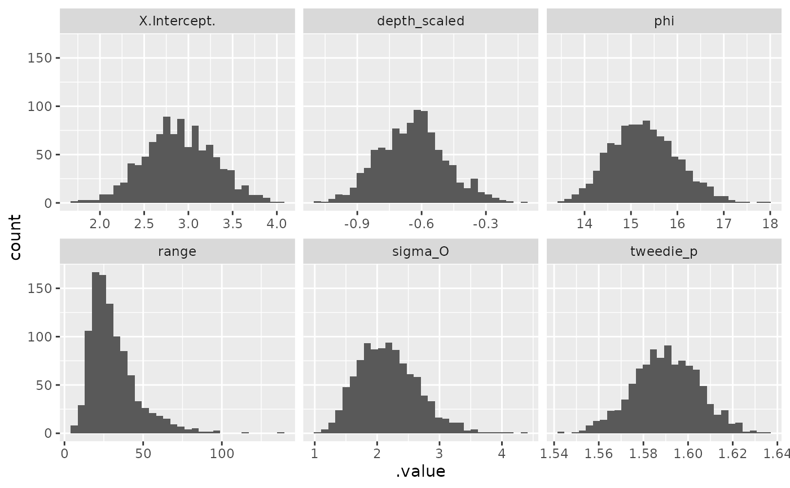

Extract parameter simulations from the joint precision matrix
Source:R/gather-spread.R
gather_sims.Rdspread_sims() returns a wide-format data frame. gather_sims() returns a
long-format data frame. The format matches the format in the tidybayes
spread_draws() and gather_draws() functions.
Arguments
- object
Output from
sdmTMB().- nsim
The number of simulation draws.
Value
A data frame. gather_sims() returns a long-format data frame:
.iteration: the sample ID.variable: the parameter name.value: the parameter sample value
spread_sims() returns a wide-format data frame:
.iteration: the sample IDcolumns for each parameter with a sample per row
Examples
m <- sdmTMB(density ~ depth_scaled,
data = pcod_2011, mesh = pcod_mesh_2011, family = tweedie())
head(spread_sims(m, nsim = 10))
#> .iteration X.Intercept. depth_scaled range phi tweedie_p sigma_O
#> 1 1 2.191667 -0.5901819 31.85191 16.15949 1.566081 2.430088
#> 2 2 2.602605 -0.7367376 16.97427 16.47078 1.598116 3.120594
#> 3 3 2.690644 -1.0831837 42.99310 15.04725 1.607441 1.835503
#> 4 4 2.810274 -0.6135098 28.87011 15.27632 1.600637 2.412999
#> 5 5 2.943655 -0.6800500 37.60646 15.80146 1.595988 2.410816
#> 6 6 3.214597 -0.7106337 48.36184 15.35741 1.613159 1.748936
head(gather_sims(m, nsim = 10))
#> .iteration .variable .value
#> 1 1 X.Intercept. 3.428553
#> 2 2 X.Intercept. 2.842100
#> 3 3 X.Intercept. 2.931986
#> 4 4 X.Intercept. 2.816825
#> 5 5 X.Intercept. 2.101858
#> 6 6 X.Intercept. 2.805431
samps <- gather_sims(m, nsim = 1000)
if (require("ggplot2", quietly = TRUE)) {
ggplot(samps, aes(.value)) + geom_histogram() +
facet_wrap(~.variable, scales = "free_x")
}
#> `stat_bin()` using `bins = 30`. Pick better value `binwidth`.
